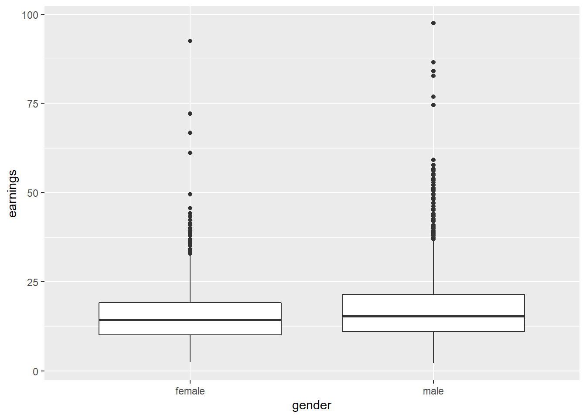
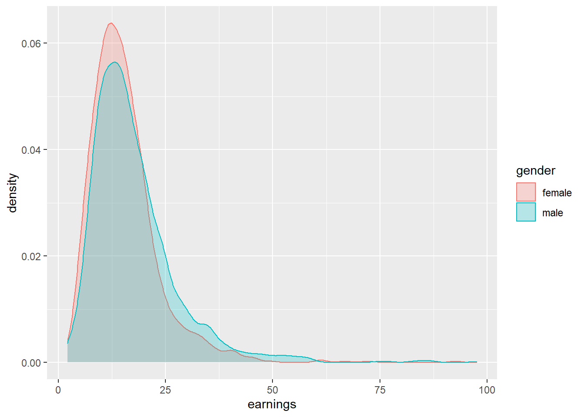
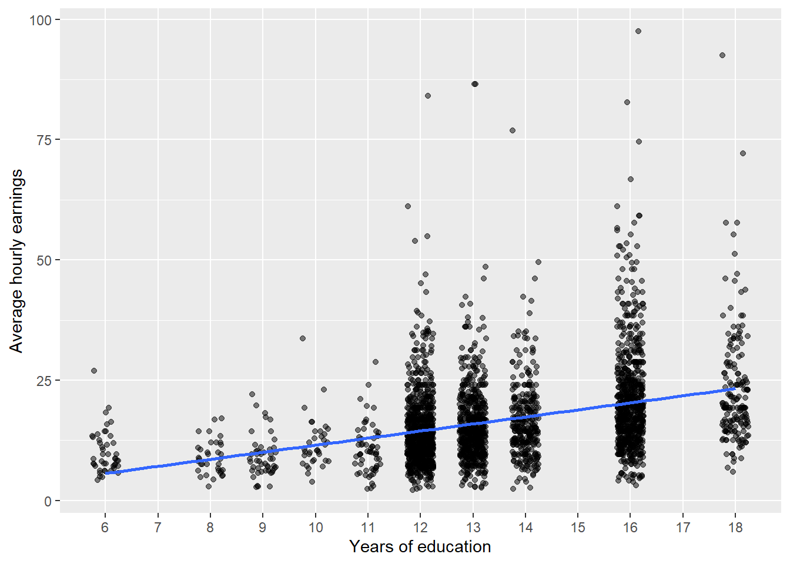
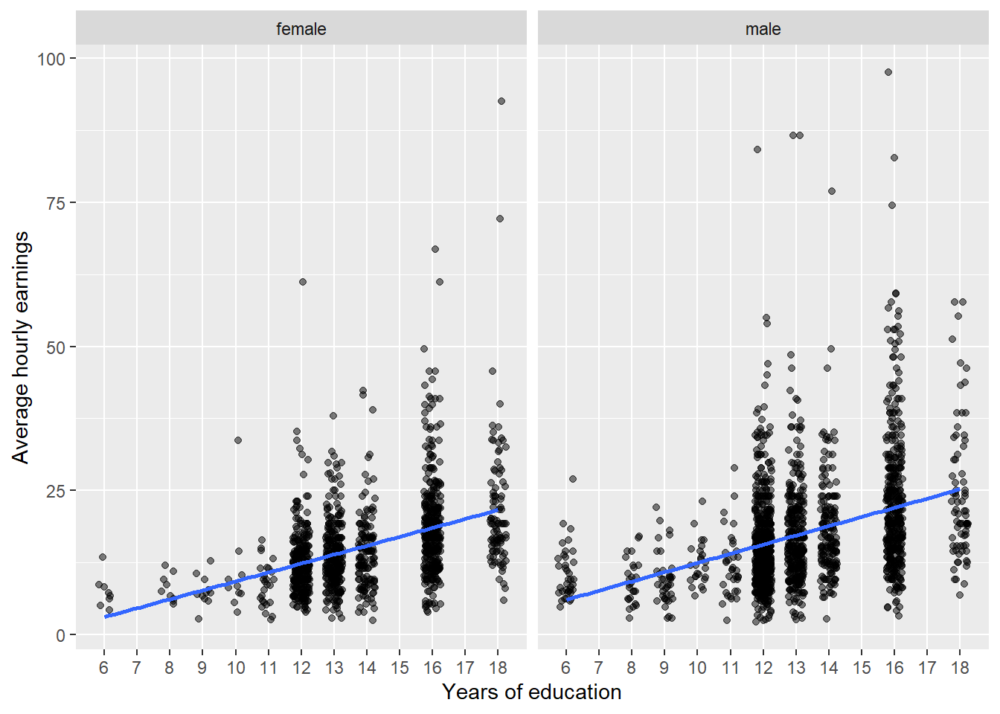
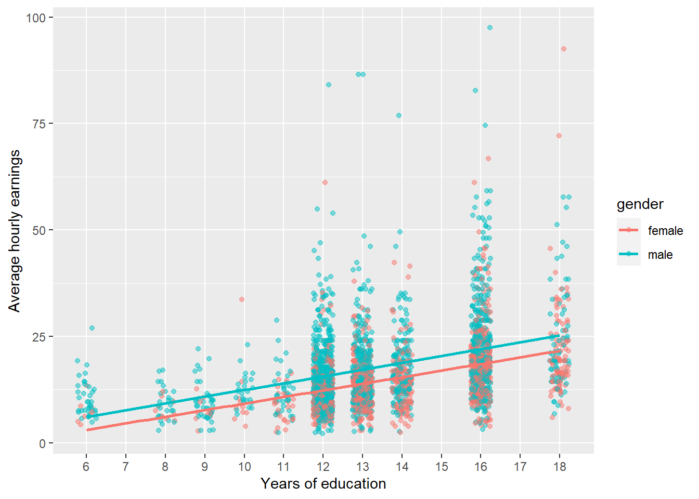
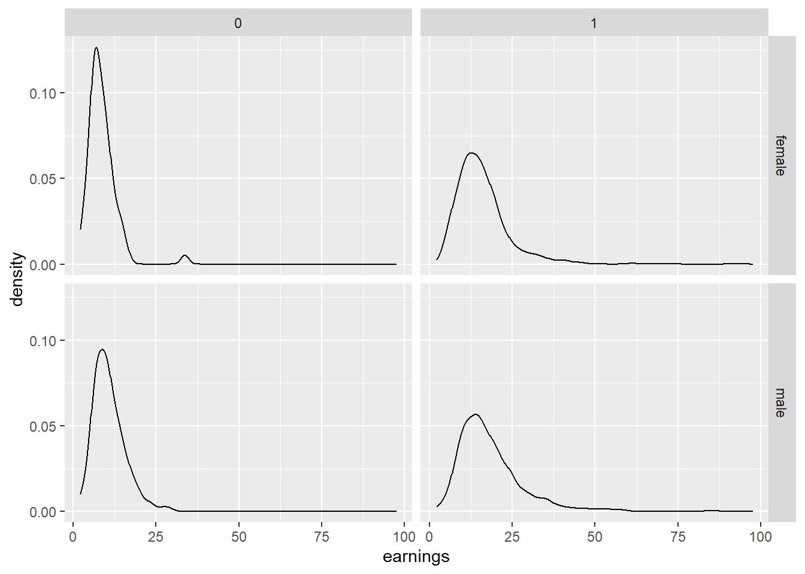

Эмпирическая часть семинаров проводится на языке программирования R с использованием среды разработки RStudio. В этой инструкции вам предлагается вспомнить основные команды, необходимые для обработки и анализа данных в R.
Для начала загружаем необходимые пакеты.
Начнем с загрузки пакетов, которые нужны нам для работы (предварительно все они должны быть установлены). Мы рекомендуем использовать команды из этих пакетов, но существует и множество других способов — выбирайте тот, который вам больше нравится.
library(AER) # пакет содержит наборы данных, используемые в учебнике Стока и Уотсона## Warning: package 'AER' was built under R version 3.6.3## Warning: package 'car' was built under R version 3.6.3## Warning: package 'carData' was built under R version 3.6.3library(dplyr) # манипуляции с данными
library(tidyr) # манипуляции с данными
library(ggplot2) # визуализация данныхВ этом примере мы работаем данными Current
Population Survey (CPS). Фрагмент данных можно загрузить, используя
встроенный набор данных пакета AER (используйте
набор данных CPSSWEducation).
Загрузим встроенный набор данных.
data("CPSSWEducation")Изучите загруженный набор данных.
Посмотрите, какие переменные содержатся в данных и какой тип у этих
переменных. Для предварительного просмотра данных можно использовать
команды View(), dplyr::glimpse() и проч.
CPSSWEducation %>% glimpse() # то же самое, что glimpse(CPSSWEducation)## Rows: 2,950
## Columns: 4
## $ age <int> 30, 30, 30, 30, 30, 30, 30, 29, 29, 30, 29, 29, 29, 29, 29, ~
## $ gender <fct> male, female, female, female, female, female, male, male, ma~
## $ earnings <dbl> 34.615383, 19.230770, 13.736263, 13.942307, 19.230770, 8.000~
## $ education <int> 16, 16, 12, 13, 16, 12, 12, 16, 16, 12, 14, 18, 18, 11, 12, ~Иногда бывает необходимо создавать новые переменные. Это можно
сделать при помощи команды dplyr::mutate(). Например,
создадим переменную, равную 1 для людей с образованием выше среднего
(будем считать такими тех, у кого количество лет образования больше 11)
и 0 для всех остальных.
CPSSWEducation <- CPSSWEducation %>% mutate(edulevel = ifelse(education > 11, 1, 0))Важнейшей частью разведочного анализа является построение таблицы с
описательными статистиками. В простом виде основные статистики можно
посмотреть через базовую команду summary().
CPSSWEducation %>% summary()## age gender earnings education edulevel
## Min. :29.0 female:1202 Min. : 2.137 Min. : 6.00 Min. :0.0000
## 1st Qu.:29.0 male :1748 1st Qu.:10.577 1st Qu.:12.00 1st Qu.:1.0000
## Median :29.0 Median :14.615 Median :13.00 Median :1.0000
## Mean :29.5 Mean :16.743 Mean :13.55 Mean :0.9237
## 3rd Qu.:30.0 3rd Qu.:20.192 3rd Qu.:16.00 3rd Qu.:1.0000
## Max. :30.0 Max. :97.500 Max. :18.00 Max. :1.0000Более сложный, но гибкий и полезный способ — использовать команду
dplyr::summarise() в комбинации с другими командами пакетов
dplyr и tidyr.
CPSSWEducation %>%
summarise(across(where(is.numeric),
list(mean = mean, median = median, sd = sd, min = min, max = max),
na.rm = TRUE)) %>%
pivot_longer(everything(), names_to = "name", values_to = "value") %>%
separate(name, c("variable", "statistic"), sep = "_") %>%
pivot_wider(names_from = statistic, values_from = value) %>%
arrange(variable) %>%
select(variable, mean, median, sd, min, max)## # A tibble: 4 x 6
## variable mean median sd min max
## <chr> <dbl> <dbl> <dbl> <dbl> <dbl>
## 1 age 29.5 29 0.500 29 30
## 2 earnings 16.7 14.6 9.40 2.14 97.5
## 3 education 13.6 13 2.31 6 18
## 4 edulevel 0.924 1 0.265 0 1Графический анализ данных — процесс творческий. Команды пакета
ggplot2 позволяют строить самые разные графики. Можно также
использовать базовые возможности R и многие другие пакеты.
Сопоставить между собой непрерывную переменную (например, доход) и дискретную переменную (например, пол) можно, построив “ящик с усами” (boxplot) или график плотности распределения (density plot) отдельно для каждого пола.
CPSSWEducation %>%
ggplot(aes(y = earnings, x = gender)) +
geom_boxplot()
CPSSWEducation %>%
ggplot(aes(earnings, col = gender, fill = gender)) +
geom_density(alpha = 0.25)
Визаулизировать связь между двумя непрерывными переменными можно,
использую диаграмму рассеяния (scatter plot). В данном конкретном
примере переменная education не совсем непрерывная, т. к.
количество лет образования может принимать только целочисленные
значения, но т. к. таких значений достаточно много, можно притвориться,
что она таковой является.
CPSSWEducation %>%
ggplot(aes(education, earnings)) +
geom_jitter(width = 0.25, alpha = 0.5) +
geom_smooth(method = "lm", se = FALSE) +
scale_x_continuous(name = "Years of education", breaks = seq(6, 18, 1), minor_breaks = FALSE) +
scale_y_continuous(name = "Average hourly earnings")
Команда geom_jitter на графике выше нужна для
наглядности, т. к. в противном случае точки бы накладывались друг на
друга (попробуйте построить график без этой команды и посмотрите, что
выйдет). Дополнительно на графике выше показан способ для подписи осей.
В качестве альтернативы можно использовать команды labs(),
xlab, ylab. Но по сравнению с ними команда
scale_x_continuous и scale_y_continuous
позволяют не только подписывать названия осей, но и редактировать другие
элементы осей.
Также диаграммы рассеяния можно построить отдельно для мужчин и для женщин.
CPSSWEducation %>%
ggplot(aes(education, earnings)) +
geom_jitter(width = 0.25, alpha = 0.5) +
geom_smooth(method = "lm", se = FALSE) +
scale_x_continuous(name = "Years of education", breaks = seq(6, 18, 1), minor_breaks = FALSE) +
scale_y_continuous(name = "Average hourly earnings") +
facet_wrap(~gender)## `geom_smooth()` using formula 'y ~ x'
CPSSWEducation %>%
ggplot(aes(education, earnings, col = gender)) +
geom_jitter(width = 0.25, alpha = 0.5) +
geom_smooth(method = "lm", se = FALSE) +
scale_x_continuous(name = "Years of education", breaks = seq(6, 18, 1), minor_breaks = FALSE) +
scale_y_continuous(name = "Average hourly earnings")## `geom_smooth()` using formula 'y ~ x'
Предварительно ознакомившись с данными, можно использовать их для ответа на исследовательские вопросы, применяя методы статистики и эконометрики.
Изучите связь между полом и образованием, оценив их соместное
распределение. Для этого можно построить таблицу сопряженности между
двумя переменными (можно использовать базовую команду
table() и другие). На основе данных таблицы оцените
основные показатели, характеризующие совместное распределение
переменных. Сделайте содержательные выводы.
CPSSWEducation %>% select(gender, education) %>% table() # (почти) то же самое, что table(CPSSWEducation$gender, CPSSWEducation$education)## education
## gender 6 8 9 10 11 12 13 14 16 18
## female 8 9 11 10 26 271 278 138 356 95
## male 37 26 38 25 35 616 329 169 396 77В таблице выше представлено количество наблюдений для каждого пола и каждого уровня образования.
(CPSSWEducation %>% select(gender, education) %>% table() / nrow(CPSSWEducation)) %>% round(digits = 3)## education
## gender 6 8 9 10 11 12 13 14 16 18
## female 0.003 0.003 0.004 0.003 0.009 0.092 0.094 0.047 0.121 0.032
## male 0.013 0.009 0.013 0.008 0.012 0.209 0.112 0.057 0.134 0.026Аналогично можно сопоставить пол и уровень образования.
CPSSWEducation %>% select(gender, edulevel) %>% table()## edulevel
## gender 0 1
## female 64 1138
## male 161 1587(CPSSWEducation %>% select(gender, edulevel) %>% table() / nrow(CPSSWEducation)) %>% round(digits = 3)## edulevel
## gender 0 1
## female 0.022 0.386
## male 0.055 0.538Известная проблема в экономике — разрыв в уровне заработной платы между мужчинами и женщинами. Еще один вопрос: влияет ли образование на заработную плату и одинакова ли сила этого влияния для мужчин и женщин. Изучите эти проблемы на используемом наборе данных. Для этого рекомендуется рассчитать базовые статистики и построить графики распределения дохода в разрезе по полу и уровню образования. Сделайте содержательные выводы.
CPSSWEducation %>%
ggplot(aes(earnings)) +
geom_density() +
facet_grid(gender ~ edulevel)
CPSSWEducation %>%
group_by(gender, edulevel) %>%
summarise(across(earnings,
list(mean = mean, median = median, sd = sd, min = min, max = max),
na.rm = TRUE)) %>%
pivot_longer(-c(gender, edulevel), names_to = "name", values_to = "value") %>%
separate(name, c("variable", "statistic"), sep = "_") %>%
pivot_wider(names_from = statistic, values_from = value) %>%
arrange(variable, gender, edulevel) %>%
select(variable, gender, edulevel, mean, median, sd, min, max)## # A tibble: 4 x 8
## # Groups: gender [2]
## variable gender edulevel mean median sd min max
## <chr> <fct> <dbl> <dbl> <dbl> <dbl> <dbl> <dbl>
## 1 earnings female 0 8.61 7.69 4.45 2.56 33.7
## 2 earnings female 1 15.8 14.4 8.15 2.40 92.5
## 3 earnings male 0 10.8 10 4.70 2.40 28.8
## 4 earnings male 1 18.3 16.2 10.2 2.14 97.5